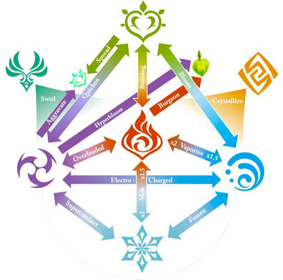

Mixing elements without exploding (much) Mezclar elementos sin explotar (mucho)
Reactions are the reason a well-thought-out four-star team beats a badly built five-star one. Been hitting things for months without combining elements? You screwed up, but oh well. Okay, let me help: try them here before you go fight. Las reacciones son la razón por la que un equipo de cuatro estrellas bien pensado le gana a uno de cinco mal armado. ¿Llevas meses pegando sin combinar elementos? Ya la cagaste, pero ni modo. A ver, te ayudo: pruébalas aquí antes de ir a pelear.

Pick two elements and see what happensElige dos elementos y mira qué pasa
First the element the enemy already has, then the one that hits it. Careful: in some reactions the order does matter. Primero el elemento que ya tiene el enemigo y luego el que lo golpea. Ojo, que en algunas reacciones el orden sí importa.
Educational demo of conventional reactions. Some interactions have extra rules. Demostración didáctica de reacciones convencionales. Algunas interacciones tienen reglas adicionales.
All conventional reactionsTodas las reacciones convencionales
The full list, grouped by type, so you know what each combination does. Los nombres en español pueden variar según la traducción del juego, por eso incluimos también el nombre en inglés para que puedas buscarlos en wikis y videos.
Lunar and Stellar reactionsReacciones Lunares y Estelares
They arrived with Nod-Krai (Lunar) and Snezhnaya (Stellar). They're special versions of reactions you already know, but not every character can trigger them just by combining elements. Llegaron con Nod-Krai (Lunares) y con Snezhnaya (Estelares). Son versiones especiales de reacciones que ya conoces, pero no las puede hacer cualquier personaje combinando elementos.
Lunar reactions only appear if your team has a compatible 5★ Moonsign character. 4★ Moonsign characters raise the team's Moonsign level, but can't trigger them on their own. Stellar reactions also depend on specific characters. Las reacciones Lunares solo aparecen si en tu equipo hay un personaje Moonsign de 5★ compatible. Los Moonsign de 4★ suben el nivel de Moonsign del equipo, pero no las activan por sí solos. Las Estelares también dependen de personajes concretos.
Every update can add characters who trigger these reactions. Before investing resources, check the character's page on HoYoWiki or KeqingMains. Cada actualización puede agregar personajes que activan estas reacciones. Antes de invertir recursos, revisa la ficha del personaje en HoYoWiki o en KeqingMains.